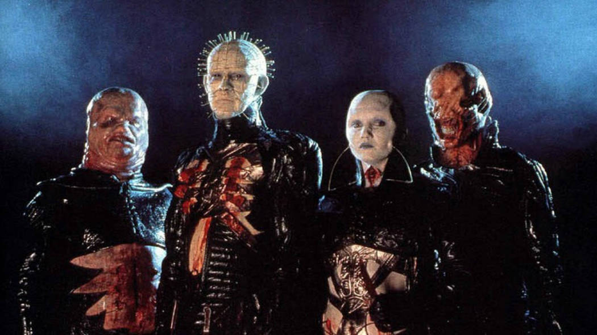

While Hellraiser is getting a highly-anticipated reimagining that releases this Friday on Hulu, there is something distinctly delightful in revisiting Clive Barker’s original 1987 horror opus that will always ensure it stands on its own. Wicked and weird in all the best ways, the film's practical effects can be a bit dated in parts, though it still makes up for it in its commitment to creeping cinematic chaos. Based on Barker's novella “The Hellbound Heart,” Hellraiser served as the horror visionary’s directorial debut and proved to be a fantastically fleshy start. Largely confined to a single house that soon gets overtaken by the forces of hell, it introduced us to the iconic Pinhead (Doug Bradley) and the beautifully brutal body horror he would wreak on the film’s characters. It is a work that still continues to excel within its limitations as it embraces the full eerie and evocative potential of its premise.

From the very opening moments, it drops us right into the gore as we see the beginning of the gloriously gruesome destruction of a hedonistic man named Frank (Sean Chapman), who has just solved a mysterious puzzle box. His reward is that he will now get torn to pieces by hooks that pull him apart and leave only tatters of himself behind. A short time later we are introduced to the man’s brother Larry (Andrew Robinson), who has decided to move into the same house where Frank was obliterated with his wife Julia (Clare Higgins). Believing he could fix it up, he is unaware of the dark forces looming within. On top of that, Larry also is oblivious to the fact that Julia was having a passionate affair with Frank. As they begin to move into the house, she makes a discovery up in the attic that changes everything.